NULL trong SQL thường gây nhầm lẫn. Ý tưởng cơ bản của NULL — biểu diễn dữ liệu bị thiếu — khá đơn giản, nhưng có một số điểm đặc biệt. Chẳng hạn, bạn phải dùng IS NULL thay vì = NULL. Oracle database còn có thêm những điểm khác thường về NULL, một mặt vì nó không phải lúc nào cũng xử lý NULL theo đúng standard, mặt khác vì nó xử lý NULL trong index theo một cách rất “đặc biệt”.
SQL standard không định nghĩa NULL là một value mà là placeholder cho một value bị thiếu hoặc chưa biết. Vì vậy, không có value nào có thể là NULL. Thay vào đó, Oracle database xử lý empty string như NULL:
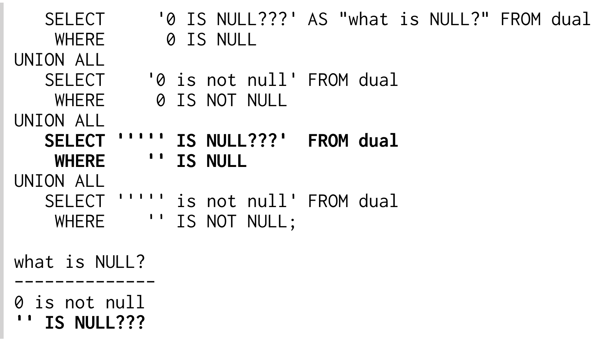
Để vấn đề thêm rối, có một trường hợp Oracle database thậm chí xử lý NULL như empty string:
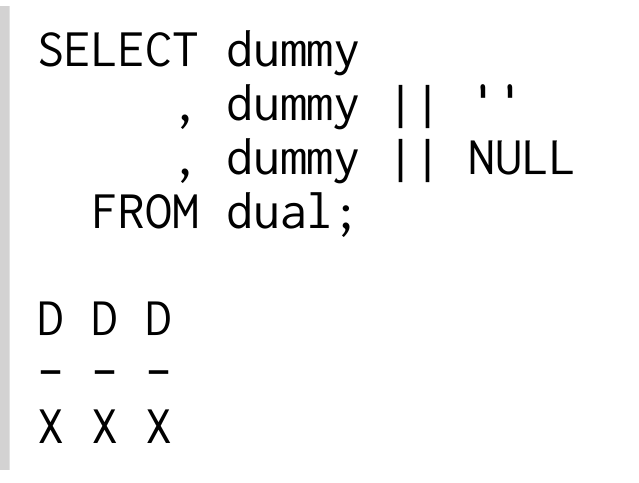
Nối column DUMMY (luôn chứa 'X') với NULL đáng lẽ phải trả về NULL.
Concept NULL được dùng trong nhiều programming language. Dù nhìn ở đâu, empty string cũng không bao giờ là NULL… ngoại trừ trong Oracle database. Trên thực tế, không thể lưu empty string vào field VARCHAR2. Nếu thử làm vậy, Oracle database chỉ lưu NULL.
Điểm đặc biệt này không chỉ kỳ lạ mà còn nguy hiểm. Ngoài ra, điểm khác thường của Oracle database với NULL chưa dừng ở đó — nó tiếp tục ảnh hưởng đến indexing.
Oracle database không đưa row vào index nếu tất cả column được index đều là NULL. Điều đó có nghĩa mọi index đều là một partial index — tương đương với việc có where clause:
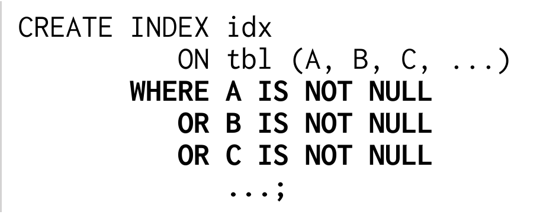
Hãy xét index EMP_DOB. Nó chỉ có một column là DATE_OF_BIRTH. Một row không có value DATE_OF_BIRTH sẽ không được thêm vào index này.
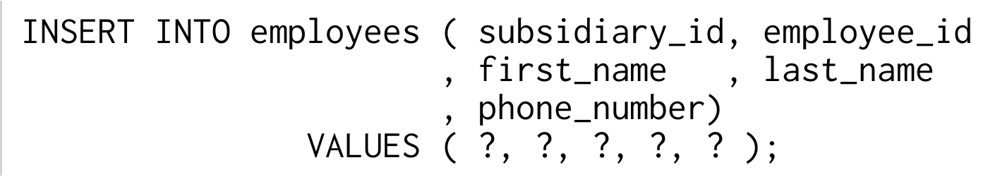
Insert statement không set DATE_OF_BIRTH nên value mặc định là NULL — vì vậy record không được thêm vào index EMP_DOB. Do đó, index không thể hỗ trợ query tìm các record có DATE_OF_BIRTH IS NULL:
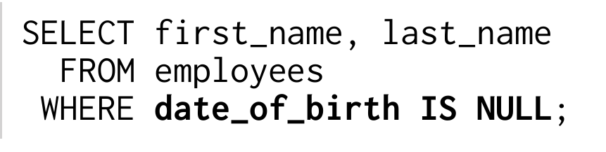
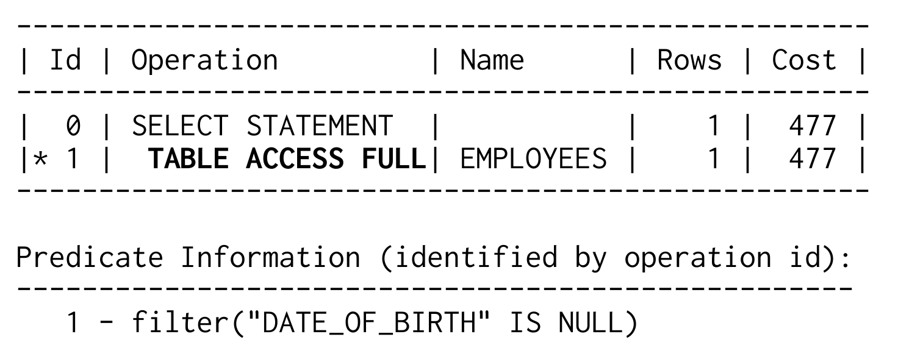
Tuy nhiên, record vẫn được đưa vào concatenated index nếu ít nhất một column của index không phải NULL:
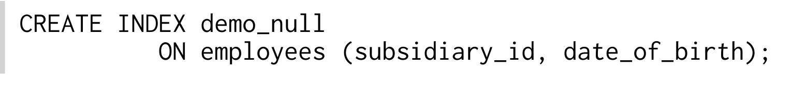
Row vừa tạo được thêm vào index vì SUBSIDIARY_ID không phải NULL. Vì vậy, index này có thể hỗ trợ query tìm tất cả employee thuộc một subsidiary cụ thể nhưng không có value DATE_OF_BIRTH:
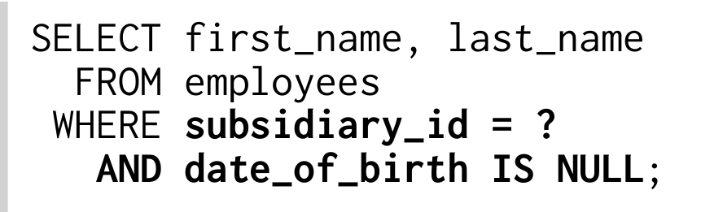
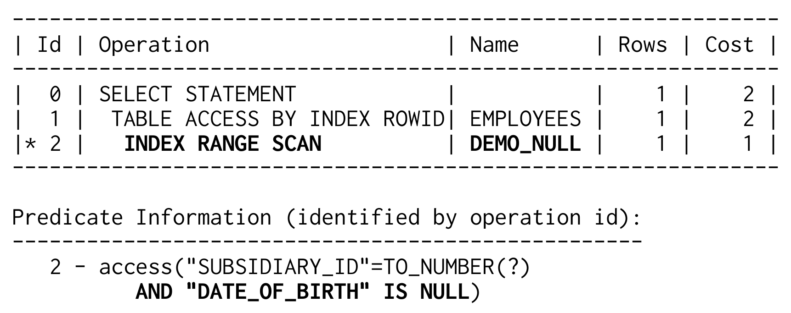
Lưu ý rằng index cover toàn bộ where clause; mọi filter đều được dùng làm access predicate trong INDEX RANGE SCAN.
Chúng ta có thể mở rộng concept này cho query ban đầu để tìm mọi record có DATE_OF_BIRTH IS NULL. Khi đó, column DATE_OF_BIRTH phải là column ngoài cùng bên trái trong index để có thể được dùng làm access predicate. Dù bản thân query không cần column index thứ hai, chúng ta thêm một column không bao giờ là NULL để bảo đảm index có đủ mọi row.
Có thể dùng bất kỳ column nào có NOT NULL constraint, chẳng hạn SUBSIDIARY_ID, cho mục đích đó.
Một cách khác là dùng constant expression không bao giờ là NULL. Nhờ vậy, index sẽ có đủ mọi row — kể cả khi DATE_OF_BIRTH là NULL.
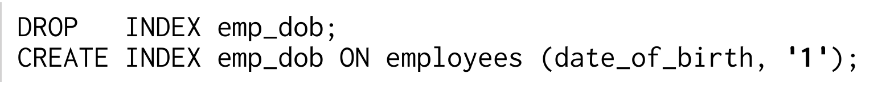
Về mặt kỹ thuật, đây là một function-based index. Ví dụ này cũng bác bỏ myth rằng Oracle database không thể index NULL.
Để index một điều kiện IS NULL trong Oracle database, index phải có một column không bao giờ có thể là NULL.
Tuy vậy, chỉ không có entry NULL là chưa đủ. Database phải chắc chắn rằng không bao giờ có entry NULL; nếu không, database phải giả định table có những row không nằm trong index.
Index sau chỉ hỗ trợ query nếu column LAST_NAME có NOT NULL constraint:
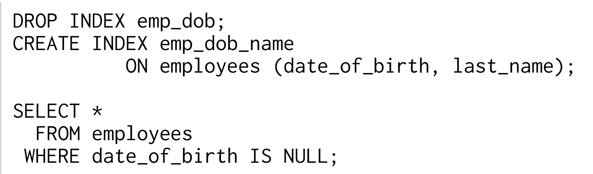
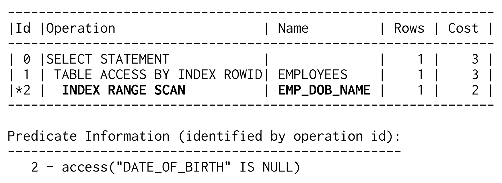
Gỡ NOT NULL constraint khiến index không thể dùng cho query này:
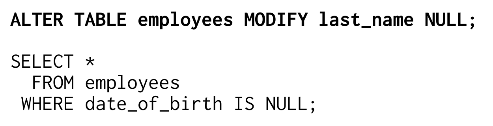
Ngoài NOT NULL constraint, database cũng biết các constant expression như ở phần trước không thể trở thành NULL.
Tuy nhiên, index trên user-defined function không áp đặt NOT NULL constraint lên index expression:
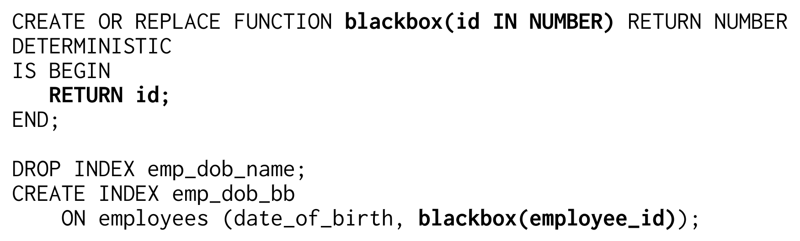
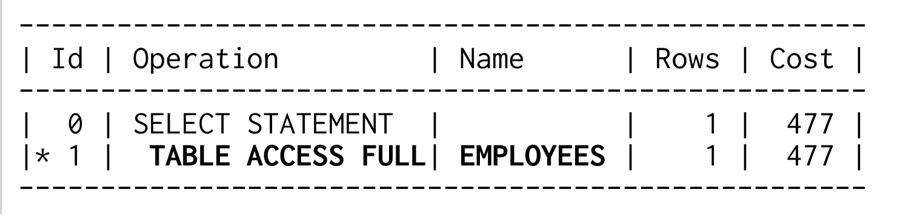
Tên function BLACKBOX nhấn mạnh rằng optimizer không biết function làm gì. Chúng ta thấy function truyền thẳng input value, nhưng với database, đó chỉ là một function trả về number. Tính chất NOT NULL của parameter bị mất. Dù index phải có mọi row, database không biết điều đó nên không thể dùng index cho query.
Nếu biết function không bao giờ trả về NULL như trong ví dụ này, bạn có thể thay đổi query để phản ánh điều đó:
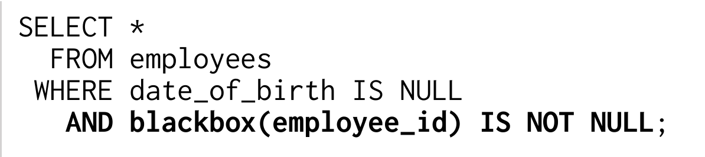
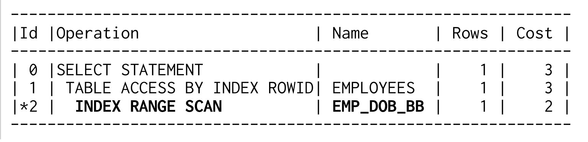
Điều kiện bổ sung trong where clause luôn đúng nên không thay đổi kết quả. Tuy nhiên, Oracle database nhận ra rằng query chỉ lấy các row chắc chắn phải nằm trong index theo định nghĩa.
Đáng tiếc là không có cách nào đánh dấu một function không bao giờ trả về NULL, nhưng bạn có thể chuyển lời gọi function vào một virtual column (từ 11g) và đặt NOT NULL constraint lên column đó.
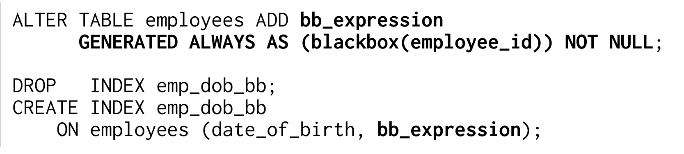
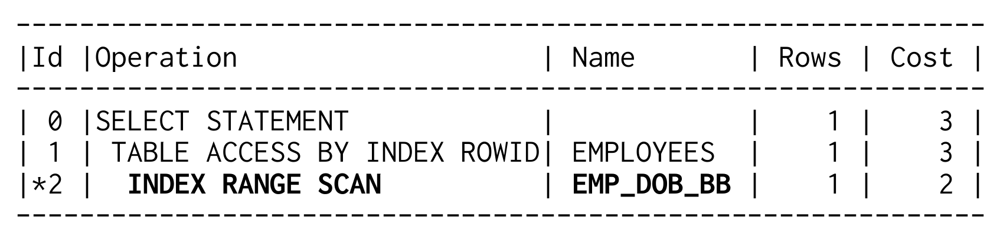
Oracle database biết rằng một số internal function chỉ trả về NULL nếu input được cung cấp là NULL.
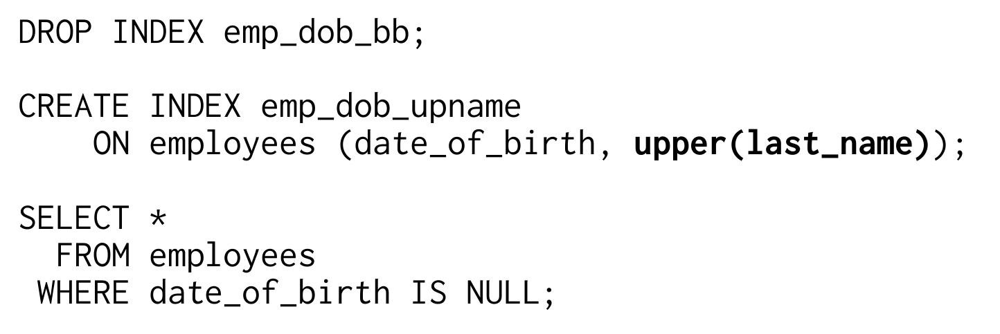
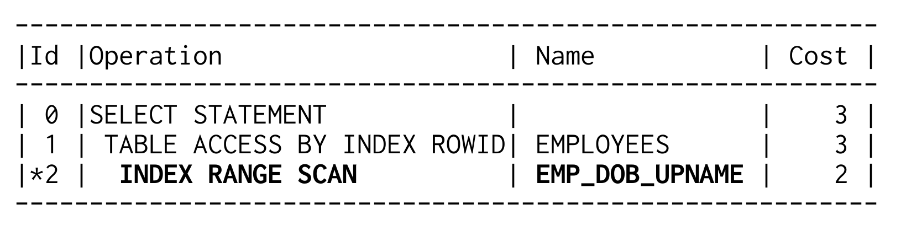
Function UPPER bảo toàn tính chất NOT NULL của column LAST_NAME. Tuy nhiên, gỡ constraint sẽ khiến index không thể dùng được:
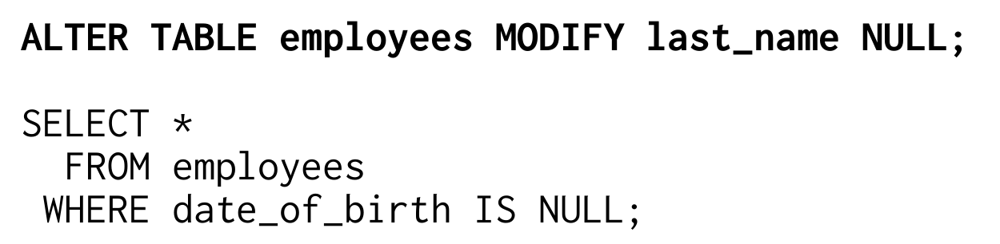
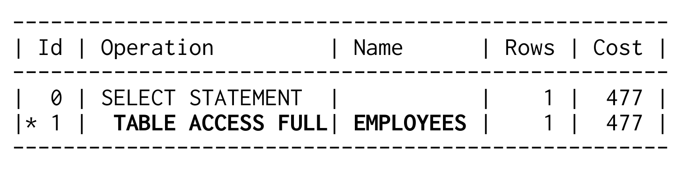
Cách Oracle database xử lý NULL trong index một cách khác thường có thể được dùng để mô phỏng partial index. Để làm vậy, chúng ta chỉ cần dùng NULL cho những row không nên được index.
Để minh họa, chúng ta mô phỏng partial index sau:
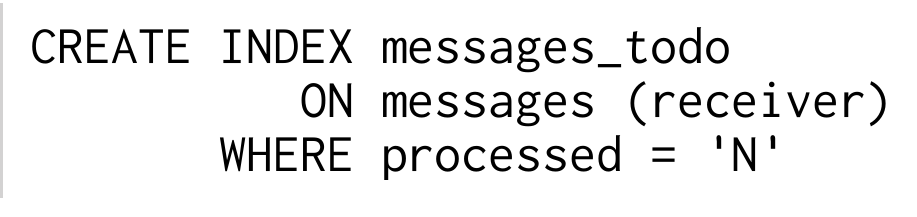
Trước tiên, chúng ta cần một function chỉ trả về value RECEIVER khi value PROCESSED là 'N'.
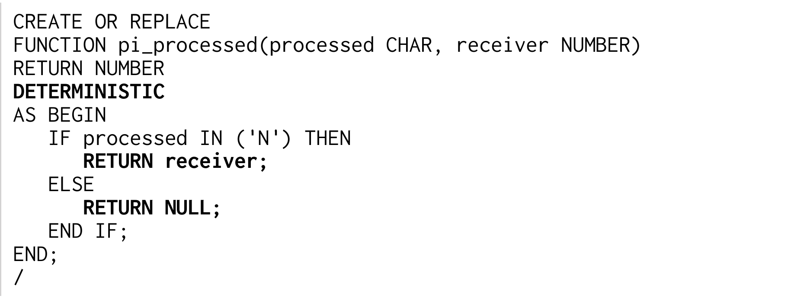
Function phải deterministic để có thể dùng trong index definition.
Bây giờ chúng ta có thể tạo index chỉ chứa các row có PROCESSED='N'.
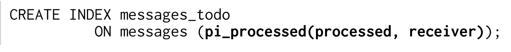
Để sử dụng index, bạn phải dùng indexed expression trong query:
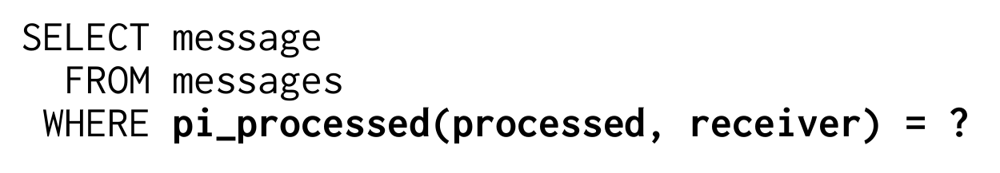
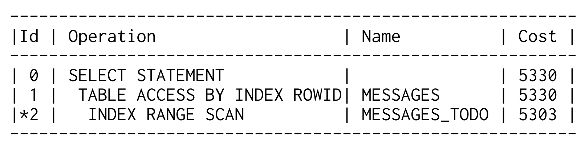
Từ release 11g, có một cách tiếp cận thứ hai — đáng sợ không kém — để mô phỏng partial index trong Oracle database: dùng một index partition bị làm hỏng có chủ đích cùng parameter SKIP_UNUSABLE_INDEX.
Các phần sau trình bày một số phương pháp phổ biến để obfuscate condition. Obfuscated condition là where clause được viết theo cách ngăn index được sử dụng đúng mức. Đây là tập hợp các anti-pattern mà mọi developer nên biết và tránh.
Phần lớn obfuscation liên quan đến DATE type. Oracle database đặc biệt dễ gặp vấn đề ở đây vì nó chỉ có một DATE type và type này luôn bao gồm cả time component.
Dùng function TRUNC để loại bỏ time component đã trở thành một practice phổ biến. Thực ra function này không loại bỏ time mà set nó về midnight, vì Oracle database không có pure DATE type. Để bỏ qua time component khi search, bạn có thể dùng function TRUNC ở cả hai phía của phép so sánh — ví dụ để tìm sales của ngày hôm qua:
Đây là một statement hoàn toàn hợp lệ và đúng, nhưng không thể sử dụng đúng mức index trên SALE_DATE. Như đã giải thích trong “Case-Insensitive Search Using UPPER or LOWER” ở trang 24, TRUNC(sale_date) hoàn toàn khác SALE_DATE — function là black box đối với database.
Có một giải pháp khá đơn giản cho vấn đề này: function-based index.
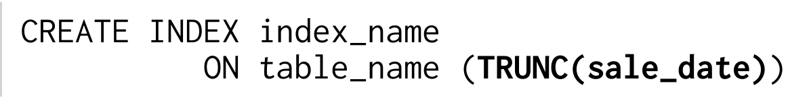
Nhưng khi đó bạn phải luôn dùng TRUNC(date_column) trong where clause. Nếu dùng không nhất quán — lúc có, lúc không có TRUNC — bạn sẽ cần hai index!
Vấn đề tương tự cũng xảy ra với database có pure date type nếu bạn search một khoảng thời gian dài hơn, như trong MySQL query sau:
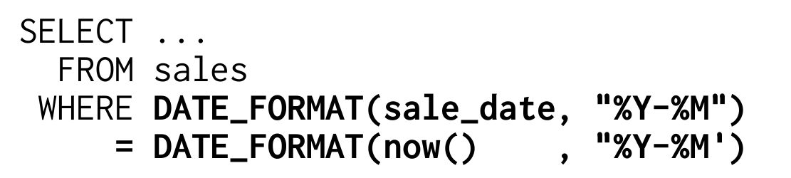
Query dùng date format chỉ chứa year và month: một lần nữa, đây là query hoàn toàn đúng nhưng có cùng vấn đề như trước. Tuy nhiên, giải pháp ở trên không áp dụng được vì MySQL không có function-based index.
Giải pháp thay thế là dùng explicit range condition. Đây là một giải pháp generic hoạt động với mọi database:
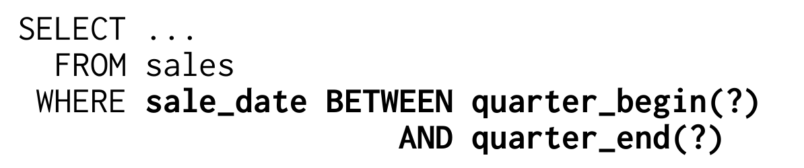
Nếu đã làm bài tập, có lẽ bạn nhận ra pattern từ exercise về tất cả employee 42 tuổi.
Một index thông thường trên SALE_DATE là đủ để optimize query này. Các function QUARTER_BEGIN và QUARTER_END tính boundary date. Việc tính toán có thể hơi phức tạp vì operator between luôn bao gồm các boundary value. Vì vậy, function QUARTER_END phải trả về một time stamp ngay trước ngày đầu tiên của quarter tiếp theo nếu SALE_DATE có time component. Logic này có thể được ẩn trong function.
Các ví dụ ở những trang sau cho thấy cách implement function QUARTER_BEGIN và QUARTER_END cho nhiều database khác nhau.
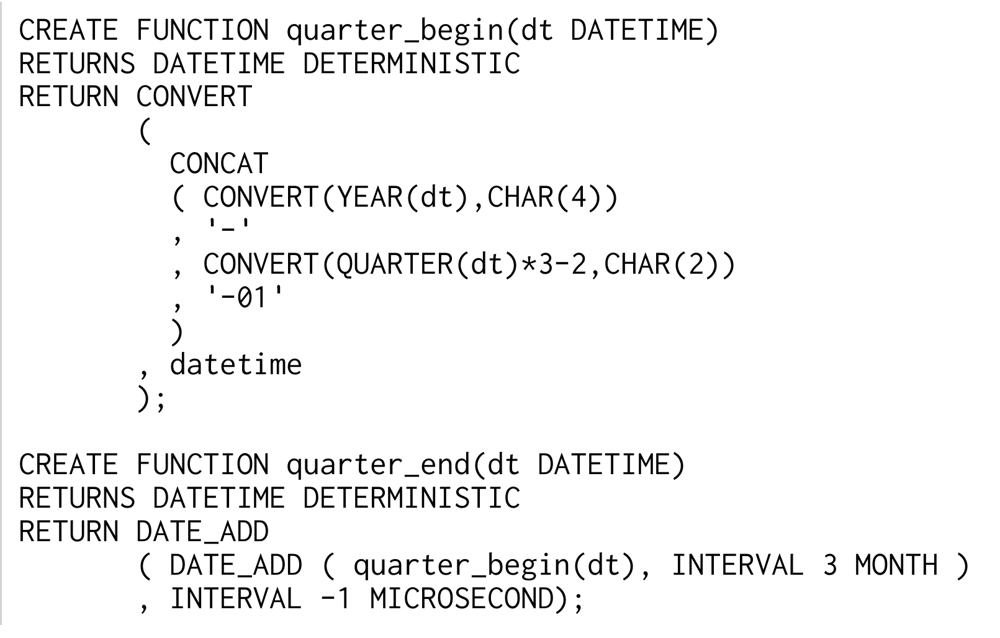
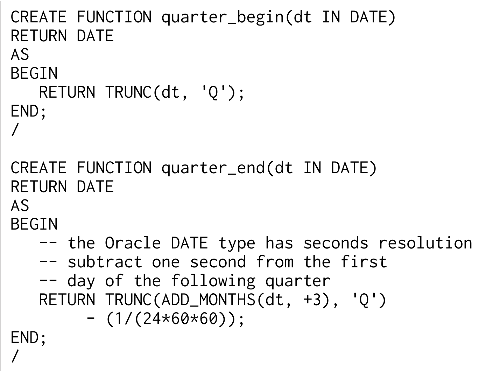
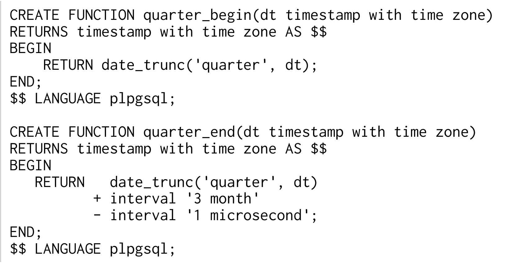
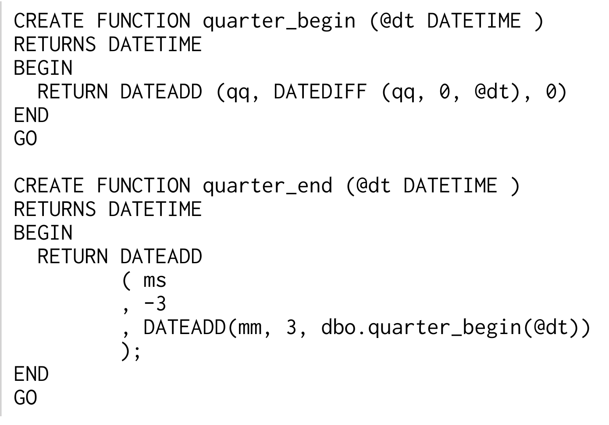
Bạn có thể dùng các auxiliary function tương tự cho những period khác — phần lớn sẽ đơn giản hơn các ví dụ trên, đặc biệt khi dùng condition lớn hơn hoặc bằng (>=) và nhỏ hơn (<) thay cho operator between. Tất nhiên, nếu muốn bạn cũng có thể tính boundary date trong application.
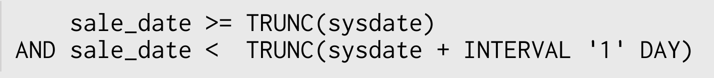
Một obfuscation phổ biến khác là so sánh date dưới dạng string, như trong PostgreSQL example sau:
Vấn đề một lần nữa là việc convert DATE_COLUMN. Những condition như vậy thường được tạo ra vì nghĩ rằng database chỉ nhận được type number và string. Tuy nhiên, bind parameter hỗ trợ mọi data type. Chẳng hạn, bạn có thể dùng object java.util.Date làm bind parameter. Đây là một lợi ích khác của bind parameter.
Nếu không thể làm vậy, bạn chỉ cần convert search term thay vì table column:
Query này có thể dùng một index thông thường trên SALE_DATE. Hơn nữa, nó chỉ convert input string một lần. Statement trước phải convert mọi date được lưu trong table trước khi có thể so sánh chúng với search term.
Dù thay đổi theo cách nào — dùng bind parameter hay convert phía còn lại của phép so sánh — bạn đều có thể dễ dàng tạo bug nếu SALE_DATE có time component. Khi đó, bạn phải dùng explicit range condition:
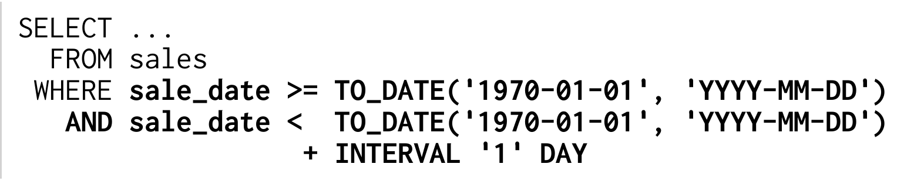
Luôn cân nhắc dùng explicit range condition khi so sánh date.
Obfuscation sau đây đặc biệt khó nhận ra:
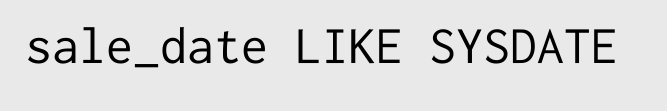
Thoạt nhìn, nó không giống obfuscation vì không dùng function nào.
Tuy nhiên, operator LIKE bắt buộc phải so sánh string. Tùy database, điều đó có thể gây error hoặc tạo implicit type conversion ở cả hai phía. Phần “Predicate Information” của execution plan cho thấy Oracle database xử lý thế nào:
Function INTERNAL_FUNCTION convert type của column SALE_DATE. Một tác dụng phụ là nó cũng ngăn việc dùng index thông thường trên DATE_COLUMN, giống như mọi function khác.
Numeric string là number được lưu trong text column. Dù đây là một practice rất tệ, nó không tự động làm index vô dụng nếu bạn nhất quán xử lý value đó như string:
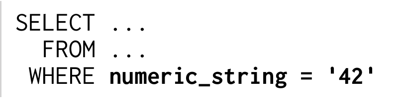
Dĩ nhiên statement này có thể dùng index trên NUMERIC_STRING. Tuy nhiên, nếu so sánh bằng number thì database không còn dùng được condition này làm access predicate.
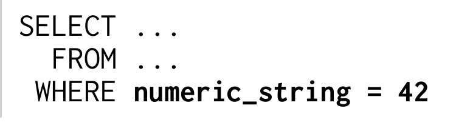
Hãy chú ý dấu nháy bị thiếu. Dù một số database báo error (ví dụ PostgreSQL), nhiều database chỉ thêm implicit type conversion.
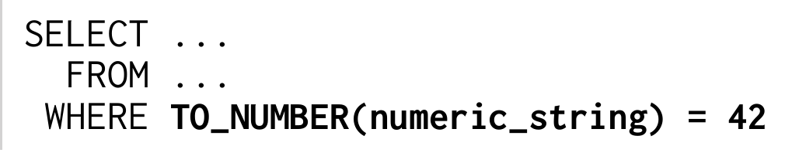
Đây là cùng vấn đề như trước. Index trên NUMERIC_STRING không thể dùng được do lời gọi function. Giải pháp cũng giống như trước: đừng convert table column, hãy convert search term.
Bạn có thể thắc mắc tại sao database không tự làm theo cách này. Lý do là convert string thành number luôn cho một kết quả không mơ hồ. Chiều ngược lại thì không đúng. Một number được format thành text có thể chứa space, punctuation và leading zero. Một value có thể được viết theo nhiều cách:
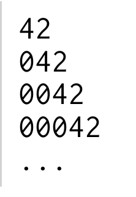
Database không thể biết number format được dùng trong column NUMERIC_STRING nên nó làm theo chiều ngược lại: database convert string thành number — đây là phép biến đổi không mơ hồ.
Function TO_CHAR chỉ trả về một string representation của number. Vì vậy, nó chỉ match string đầu tiên trong danh sách trên. Nếu dùng TO_NUMBER, nó match tất cả string. Điều đó có nghĩa hai biến thể không chỉ khác nhau về performance mà còn khác nhau về semantic!
Dùng numeric string nhìn chung gây nhiều vấn đề: quan trọng nhất là nó gây performance problem do implicit conversion và tạo rủi ro gặp conversion error vì number không hợp lệ. Ngay cả query đơn giản nhất, không dùng function nào trong where clause, cũng có thể abort với conversion error nếu chỉ cần một invalid number được lưu trong table.
Lưu ý rằng vấn đề không xảy ra theo chiều ngược lại:
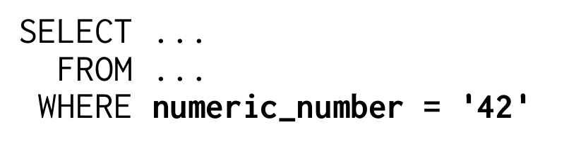
Database sẽ nhất quán transform string thành number. Nó không áp dụng function lên column có thể được index, vì vậy regular index vẫn hoạt động. Tuy nhiên, bạn vẫn có thể tự convert theo cách sai:
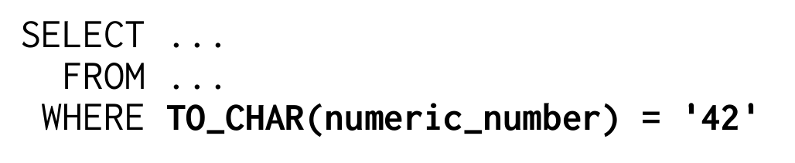
Phần này nói về một obfuscation phổ biến ảnh hưởng đến concatenated index.
Ví dụ đầu tiên lại nói về date và time type nhưng theo chiều ngược lại. MySQL query sau kết hợp một date column và một time column để áp dụng range filter lên cả hai:
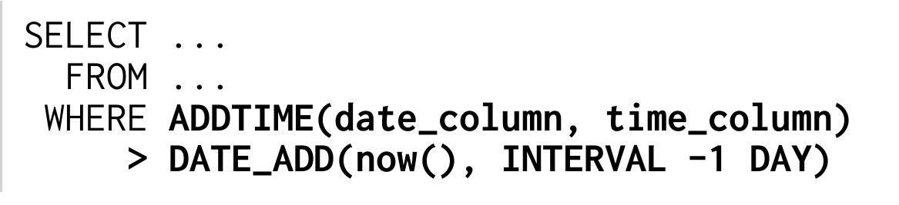
Nó chọn mọi record trong 24 giờ vừa qua. Query không thể dùng đúng mức concatenated index trên (DATE_COLUMN, TIME_COLUMN) vì search không thực hiện trên các column được index mà trên derived data.
Bạn có thể tránh vấn đề này bằng data type có cả date và time component (ví dụ MySQL DATETIME). Khi đó, bạn có thể dùng column này mà không cần function call:
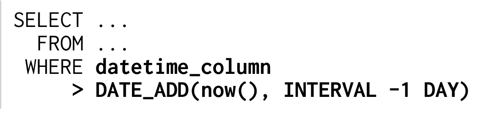
Đáng tiếc là khi gặp vấn đề này, thường không thể thay đổi table.
Lựa chọn tiếp theo là function-based index nếu database hỗ trợ — dù cách này có mọi drawback đã bàn trước đó. Với MySQL, function-based index vốn không phải là một option.
Tuy vậy, vẫn có thể viết query để database dùng concatenated index trên DATE_COLUMN, TIME_COLUMN với access predicate — ít nhất là một phần. Để làm vậy, chúng ta thêm một condition vào DATE_COLUMN.
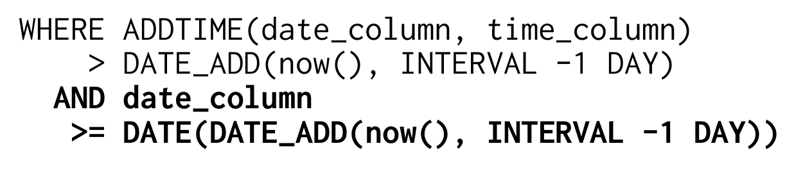
Condition mới hoàn toàn redundant nhưng là một filter trực tiếp trên DATE_COLUMN và có thể được dùng làm access predicate. Dù kỹ thuật này không hoàn hảo, nó thường là một approximation đủ tốt.
Bạn cũng có thể dùng kỹ thuật này khi lưu date và time trong text column, nhưng phải dùng date format và time format tạo ra thứ tự chronological khi sort theo lexical order — ví dụ format được ISO 8601 gợi ý (YYYY-MM-DD HH:MM:SS). Ví dụ sau dùng function TO_CHAR của Oracle database cho mục đích đó:
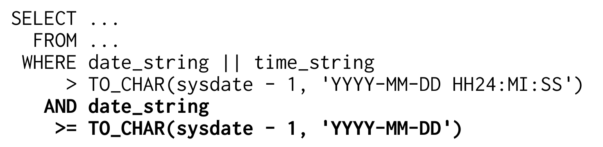
Chúng ta sẽ lại gặp vấn đề áp dụng range condition trên nhiều column trong phần “Paging Through Results”. Chúng ta cũng sẽ dùng cùng phương pháp approximation để giảm nhẹ vấn đề.
Đôi khi chúng ta gặp trường hợp ngược lại và muốn cố ý obfuscate condition để nó không còn được dùng làm access predicate. Chúng ta đã xem vấn đề này khi bàn về ảnh hưởng của bind parameter lên LIKE condition. Hãy xét ví dụ sau:
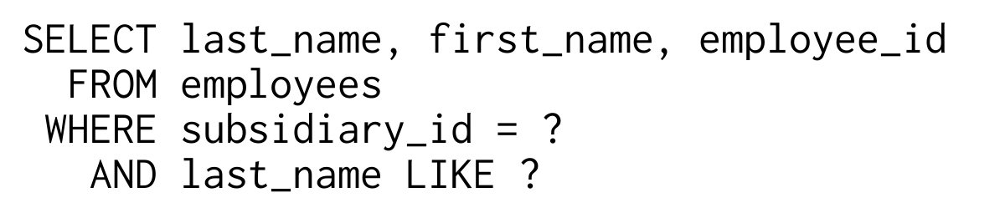
Giả sử có một index trên SUBSIDIARY_ID và một index khác trên LAST_NAME, index nào tốt hơn cho query này?
Không biết vị trí wildcard trong search term thì không thể đưa ra câu trả lời có cơ sở. Optimizer không còn lựa chọn nào khác ngoài việc “đoán”. Nếu biết luôn có leading wildcard, bạn có thể cố ý obfuscate LIKE condition để optimizer không còn xem xét index trên LAST_NAME.
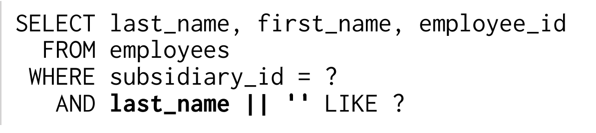
Chỉ cần append một empty string vào column LAST_NAME. Tuy nhiên, đây là option cuối cùng. Chỉ dùng khi thật sự cần thiết.
Một trong những tính năng cốt lõi của SQL database là hỗ trợ ad-hoc query: query mới có thể được thực thi bất cứ lúc nào. Điều này chỉ khả thi vì query optimizer (query planner) hoạt động ở runtime; nó phân tích từng statement khi nhận được và lập tức tạo execution plan hợp lý. Bind parameter có thể giảm overhead do runtime optimization gây ra.
Tóm lại, database được tối ưu cho dynamic SQL — vì vậy hãy dùng nó nếu cần.
Tuy nhiên, có một practice phổ biến là tránh dynamic SQL để dùng static SQL — thường vì myth “dynamic SQL chậm”. Practice này gây hại nhiều hơn lợi nếu database dùng shared execution plan cache như DB2, Oracle database hoặc SQL Server.
Để minh họa, hãy hình dung một application query table EMPLOYEES. Application cho phép search subsidiary id, employee id và last name (case-insensitive) theo mọi tổ hợp. Vẫn có thể viết một query duy nhất bao phủ mọi trường hợp bằng “smart” logic.